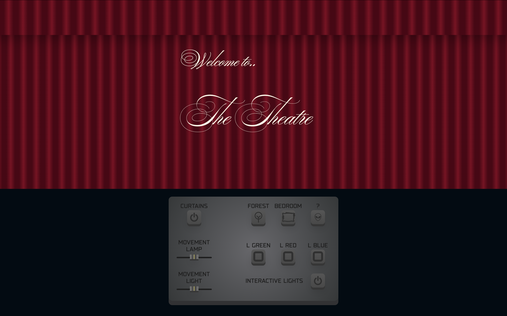
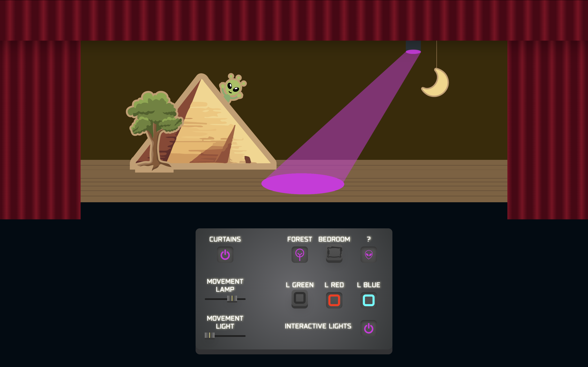
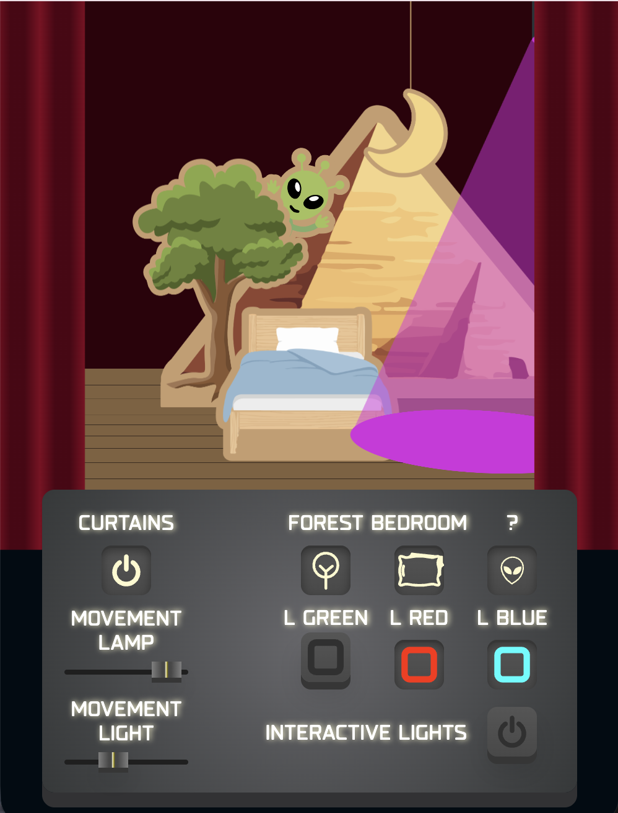
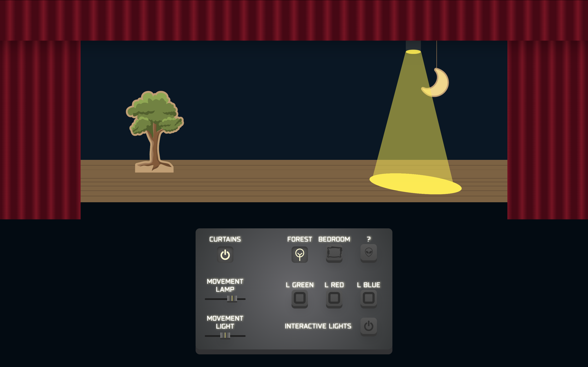

De opdracht


CSS to the Rescue was een project waarbij ik een controlepaneel moest maken met alleen CSS, geen JavaScript. Echt experimenteren dus. Ik was uiteindelijk erg blij met het resultaat, maar ik merk dat ik dat vertrouwen tijdens het maken zelf nog niet altijd had. Ik moet mezelf er soms aan herinneren dat het goed gaat worden, ook als het er tussentijds nog niet zo uitziet. Ik ben begonnen met een 3D element, wat ik heel gaaf vond om te proberen, maar ik had dat veel eerder in het proces moeten plannen. Ik was er halverwege aan begonnen en merkte toen pas hoe veel werk het was om dingen goed te positioneren in een 3D space zonder dat je dat van tevoren hebt uitgedacht. Dat kostte me veel meer tijd dan verwacht.

Wat zou ik anders doen
Als ik het opnieuw zou doen zou ik van tevoren goed bedenken welke technieken ik wil gebruiken en daar mijn ontwerp op afstemmen, in plaats van andersom. 3D in CSS is echt gaaf maar vraagt om een goede voorbereiding vanaf het begin.
